Proposhaft with Center Bearing ASSY (4WD) Remove |
| 1. Proposhaft with center bearing ASSY |
 |
Attach the mark to the point in the figure, remove four bolts, washer and nuts, and separate the propeller shaft ASSY RR from the default flange.
 |
 |
Remove the four bolts and remove the Propellawiz Center Bearing Shaft ASSY.
 |
After removing the Propellawiz Center Bearing Shaft ASSY, the SST is inserted into the extension housing to prevent the leakage of the transfile.
| 2. Proposhaft ASSY |
| 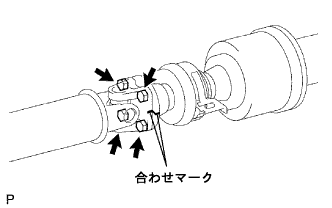 |
Attach the mark to the point in the figure, remove the four bolts, the washer and the nuts, and separate the propeller shaft ASSY from the interimide shaft ASSY.
| 3. Propelline Tam Iight Sijaft ASSY |
| 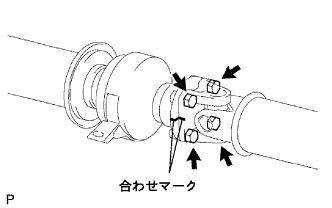 |
Attach the mark to the point in the figure, remove the four bolts, washer and nuts each, and separate the interimide shaft asser from the propeller shaft ASSY RR.
| 4. Center Support Bearing ASSY No.1 Remove (Front) |
| 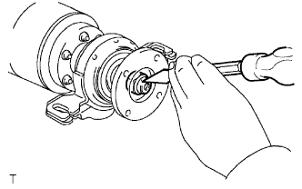 |
Use tagane and hammer to solve the nuts.
| 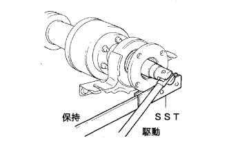 |
Use SST to hold the universal joint flange (front side) and remove nuts and washer.
| 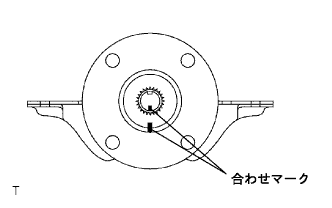 |
Confirm that the mark is marked with the flange and shaft.
| 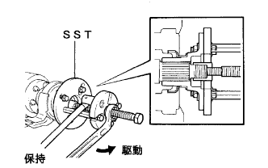 |
Use SST to remove the universal joint flange (front side).
| 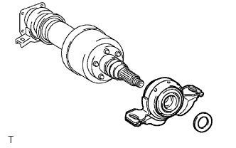 |
Remove the washer and the center support bearing ASSY No.1 (front).
| 5. Center Support Bearing ASSY No.1 Remove (rear) |
| 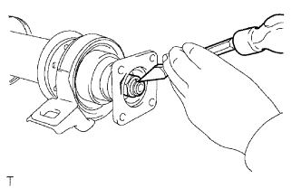 |
Use tagane and hammer to solve the nuts.
| 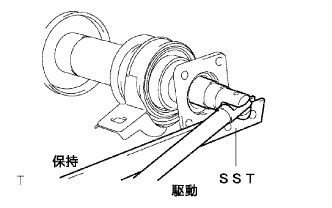 |
Use SST to hold the universal joint flange (rear side) and remove nuts and washer.
| 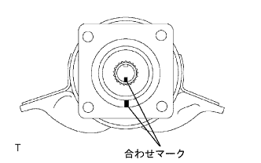 |
Check if the mark is marked with the flange and shaft.
| 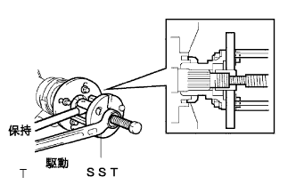 |
Use SST to remove the universal joint flange (rear side).
| 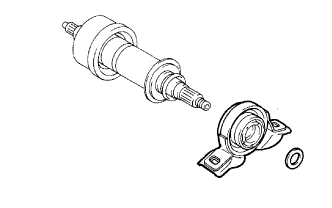 |
Remove the washer and the center support bearing ASSY No.1 (rear side).